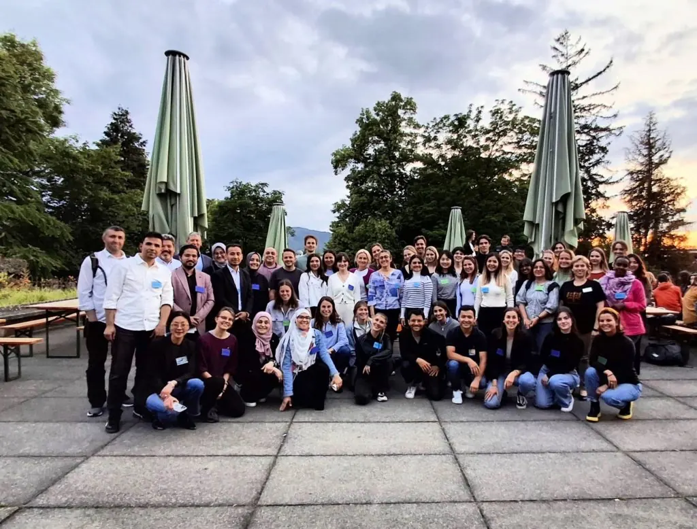

Die ETH Zürich ist als Bildungszentrum seit 1855 ein Anziehungspunkt für internationale Talente. Am Freitag, 23. Mai 2025, tauchte die Abendsonne das historische Gebäude in ein goldenes Licht. Während die Studierenden auf das Ende einer weiteren Woche und den bevorstehenden Abschluss des akademischen Jahres anstiessen, versammelte sich eine weitere Gruppe des SEET-Studienförderungsprogramms 2025/2026 zum ersten Mal im Alumni-Pavillon.

29 Mentees aus Afghanistan, Eritrea, Georgien, dem Iran, dem Sudan, Syrien, der Türkei und der Ukraine werden sich zusammen mit 25 Mentor:innen in den nächsten 12 Monaten auf eine gemeinsame Reise begeben. Weitere 10 Mentees werden ohne Mentor:in an dem Programm teilnehmen.
Über 2 ½ Stunden hinweg füllte eine Gruppe von Fremden, die allein und sichtlich nervös zur Auftaktveranstaltung gekommen waren, den Raum schnell mit Gesprächen und Gelächter, gekonnt geleitet von Nora Diethelm und Stéphanie Reust von SEET, die den Abend gemeinsam auf Englisch und Deutsch moderierten.
Selbst diejenigen, die nicht vor Ort sein konnten, hatten die Möglichkeit, online teilzunehmen, unterstützt von einem Mitglied des SEET-Teams, das Tausende von Kilometern entfernt in Südamerika sass. Das war ein perfektes Beispiel für den ehrenamtlichen Geist unserer Organisation.
Nach ein paar Icebreaker-Übungen ging es am Abend schnell zur Sache. Das Studienunterstützungsprogramm wird drei verschiedene Säulen umfassen: Mentoring, Skills und Networking sowie finanzielle Unterstützung.
Nachdem sich die anwesenden Mentees und Mentor:innen gegenseitig vorgestellt hatten, wurden die Mentees gebeten, ihre Ziele für die nächsten zwölf Monate zu nennen. Was hoffen sie zu studieren? Was hoffen sie zu erreichen? Was sind ihre Träume?
Anhand der SMART-Methode (Spezifisch, Messbar, Erreichbar, Realistisch, Terminiert) wurde jedes Mentee-Mentor:in-Tandem gebeten, die Ressourcen zu ermitteln, die zum Erreichen dieser Ziele erforderlich sind, und festzustellen, ob es Hindernisse gibt.
Als Teil des Programms stellt SEET jeder:m Mentee einen finanziellen Betrag zur Verfügung, um zu helfen, finanzielle Hürden auf dem Bildungsweg zu überwinden. Im Rahmen des zugewiesenen Betrags kann jede:r Mentee SEET bitten, die Kosten für Sprachkurse oder andere für den Hochschulzugang erforderliche Kurse zu übernehmen. Diese können von Universitätsgebühren bis hin zu anderen Kosten im Zusammenhang mit vorbereitenden Aktivitäten wie Laptops, Büchern oder anderen Materialien reichen.
Im Laufe des Abends wurden neue Bande geknüpft; ein zuversichtliches Lächeln hatte das nervöse Lächeln abgelöst, und es wurden Termine für künftige gemeinsame Treffen vereinbart. Die Arbeit, die Nora und Stéphanie allen abverlangt hatten, hatte alle hungrig gemacht, und von dem köstlichen libanesischen Buffet, das für alle bereitgestellt wurde, blieb kaum ein Krümel übrig!
Bevor die Mentees zurück nach Zürich oder in die Züge nach St. Gallen, Freiburg, Basel und Lugano stiegen, versammelten sich alle Mentees, Mentor:innen und multinationalen SEET-Freiwilligen für ein Erinnerungsfoto.
Die beiden letzten Mentees und der Mentor, die abreisten, unterhielten sich noch, als die Lichter im Alumni-Pavillon gelöscht wurden. Als sie über die Erfahrungen ihrer oft schwierigen Reisen in die Schweiz sprachen und darüber, dass sie nicht zurückreisen konnten, um ihre Familie zu besuchen, war ein Gefühl der Traurigkeit spürbar. Dann sagte einer der Mentees etwas Erstaunliches.
„Heute Abend, als ich hierher kam, hatte ich ein bisschen Angst“, erklärte er. „Ich kannte niemanden, und ich wusste nicht, was mich erwartete. Nach dem Icebreaker mussten wir alle die Rückseite unserer Namensschilder überprüfen. Auf jedem Namensschild war das Bild eines Vogels abgebildet, und die Person im Raum, die das passende Bild hatte, würde mein Mentor sein, dachte ich.”
„Plötzlich stand jemand vor mir… und ich kannte ihn. Nachdem wir vor vielen Jahren unsere Heimatländer getrennt voneinander verlassen hatten, waren wir beide fast 2.000 km gereist, um in Indien einen Bachelor-Abschluss zu machen, und hatten uns im selben Kurs getroffen. Dann verloren wir den Kontakt. Heute Abend habe ich meinen besten Freund wiedergefunden. Und ich bin so glücklich.“
Zu Beginn des Abends wurden die Mentor:innen und Mentees mit folgender Frage konfrontiert: Stell dir vor, in einem Jahr treffen wir uns alle wieder. Zur gleichen Zeit, am gleichen Ort. Was wollst du erreicht haben, und wie willst du die letzten zwölf Monate reflektieren?
In den nächsten zwölf Monaten wollen wir eine Mischung aus persönlichen Geschichten von Mentees und Mentor:innen sowie wichtigen Meilensteinen während des Studienförderprogramms erzählen. Das Zusammentreffen von zwei alten Freunden, die sich nun in ihrer neuen Heimat Schweiz gegenseitig unterstützen werden, ist bereits ein ganz besonderer Anfang.
ETH Zürich, the Swiss Federal Institute of Technology has been attracting international talent as a centre for education since 1855. On Friday 23 May 2025, the evening sun bathed the historic buildings in a golden glow. As students toasted the end of another week and the imminent conclusion of the academic year, another group – on the 2025/2026 SEET study support programme – gathered at the Alumni Pavillion for the very first time.
29 mentees from Afghanistan, Eritrea, Georgia, IR Iran, Sudan, Syria, Turkey and Ukraine, together with 25 mentors will embark on a journey together over the next 12 months. Another 10 mentees will participate in the programme without a mentor.
Over 2 ½ hours, a group of strangers who had arrived alone for the kick-off event with a visible sense of nervousness, quickly filled the room with conversation and laughter, skilfully guided by SEET’s Nora Diethelm and Stéphanie Reust who co-led the evening in English and German.
Even those who could not make the event physically were able to participate online, supported by one of the SEET team sat thousands of kilometres away in South America. The volunteer spirit of our organisation exemplified perfectly.
After a couple of Icebreaker exercises, the evening quickly got down to business. The study support programme will feature three different pillars, focused on Mentoring; Information, Skills and Networking; and Funding.
Once the mentees and mentors in the room had been introduced to each other, the mentees were asked to identify their goals for the next twelve months. What do they hope to study? What do they hope to achieve? What are their dreams?
Utilising the SMART methodology (Specific, Measurable, Achievable, Realistic, Timely), each mentee-mentor tandem was then asked to identify the resources that would be required to achieve these goals, and whether any obstacles may hinder their progress.
As part of the programme, SEET provides a financial sum for each mentee to help them overcome financial hurdles on their educational path. Within the amount assigned, each mentee can ask SEET to cover the costs for language courses or other courses required to access university. These could range from university fees to other costs related to preparatory activities such as laptops, books, or other materials.
As the evening progressed, new bonds were made; confident smiles had replaced nervous smiles and diary dates were set for future meetings together. The work that Nora and Stéphanie asked everyone to undertake had clearly made everyone hungry, with barely a crumb left from the delicious Lebanese buffet provided for everyone!
Before the mentees drifted back into Zurich, or on trains taking them home to St Gallen, Fribourg, Basel and Lugano, the full group of mentees, mentors and multinational SEET volunteers gathered together for a photograph to commemorate the occasion.
The last two mentees and mentor to depart were still in close conversation as the Alumni Pavillion lights were switched off. As they talked about the experience of their often difficult journeys to Switzerland, and the inability to travel back to see family, there was a palpable sense of sadness. Then one of the mentees said something astonishing.
“Tonight, when I came here, I was a bit scared” he explained. “I did not know anyone, and I didn’t know what to expect. After the icebreaker, we all had to check the reverse side of our name badge. Each badge had a picture of a bird, and the person in the room who had the matching picture, I understood would be my mentor.”
“Suddenly, someone was stood in front of me…and I knew him. After leaving our home countries individually many years ago, we had both travelled almost 2,000km to study a bachelor’s degree in India, and met on the same course. Then we lost contact. Tonight, I found my best friend again. And I am so happy.”
Earlier in the evening, the mentors and mentees were posed with the following question: Imagine in one year from now, we all meet again. Same time, same place. What do you want to have achieved, and how do you want to reflect on the last twelve months?
Over the next twelve months, we will aim to share a mix of personal stories from both mentees and mentors, as well as key milestones during the study support programme. The meeting of two old friends, who will now support each other in their new home country of Switzerland, is already an incredibly special start.
Die ETH Zürich ist als Bildungszentrum seit 1855 ein Anziehungspunkt für internationale Talente. Am Freitag, 23. Mai 2025, tauchte die Abendsonne das historische Gebäude in ein goldenes Licht. Während die Studierenden auf das Ende einer weiteren Woche und den bevorstehenden Abschluss des akademischen Jahres anstiessen, versammelte sich eine weitere Gruppe des SEET-Studienförderungsprogramms 2025/2026 zum ersten Mal im Alumni-Pavillon.
29 Mentees aus Afghanistan, Eritrea, Georgien, dem Iran, dem Sudan, Syrien, der Türkei und der Ukraine werden sich zusammen mit 25 Mentor:innen in den nächsten 12 Monaten auf eine gemeinsame Reise begeben. Weitere 10 Mentees werden ohne Mentor:in an dem Programm teilnehmen.
Über 2 ½ Stunden hinweg füllte eine Gruppe von Fremden, die allein und sichtlich nervös zur Auftaktveranstaltung gekommen waren, den Raum schnell mit Gesprächen und Gelächter, gekonnt geleitet von Nora Diethelm und Stéphanie Reust von SEET, die den Abend gemeinsam auf Englisch und Deutsch moderierten.
Selbst diejenigen, die nicht vor Ort sein konnten, hatten die Möglichkeit, online teilzunehmen, unterstützt von einem Mitglied des SEET-Teams, das Tausende von Kilometern entfernt in Südamerika sass. Das war ein perfektes Beispiel für den ehrenamtlichen Geist unserer Organisation.
Nach ein paar Icebreaker-Übungen ging es am Abend schnell zur Sache. Das Studienunterstützungsprogramm wird drei verschiedene Säulen umfassen: Mentoring, Skills und Networking sowie finanzielle Unterstützung.
Nachdem sich die anwesenden Mentees und Mentor:innen gegenseitig vorgestellt hatten, wurden die Mentees gebeten, ihre Ziele für die nächsten zwölf Monate zu nennen. Was hoffen sie zu studieren? Was hoffen sie zu erreichen? Was sind ihre Träume?
Anhand der SMART-Methode (Spezifisch, Messbar, Erreichbar, Realistisch, Terminiert) wurde jedes Mentee-Mentor:in-Tandem gebeten, die Ressourcen zu ermitteln, die zum Erreichen dieser Ziele erforderlich sind, und festzustellen, ob es Hindernisse gibt.
Als Teil des Programms stellt SEET jeder:m Mentee einen finanziellen Betrag zur Verfügung, um zu helfen, finanzielle Hürden auf dem Bildungsweg zu überwinden. Im Rahmen des zugewiesenen Betrags kann jede:r Mentee SEET bitten, die Kosten für Sprachkurse oder andere für den Hochschulzugang erforderliche Kurse zu übernehmen. Diese können von Universitätsgebühren bis hin zu anderen Kosten im Zusammenhang mit vorbereitenden Aktivitäten wie Laptops, Büchern oder anderen Materialien reichen.
Im Laufe des Abends wurden neue Bande geknüpft; ein zuversichtliches Lächeln hatte das nervöse Lächeln abgelöst, und es wurden Termine für künftige gemeinsame Treffen vereinbart. Die Arbeit, die Nora und Stéphanie allen abverlangt hatten, hatte alle hungrig gemacht, und von dem köstlichen libanesischen Buffet, das für alle bereitgestellt wurde, blieb kaum ein Krümel übrig!
Bevor die Mentees zurück nach Zürich oder in die Züge nach St. Gallen, Freiburg, Basel und Lugano stiegen, versammelten sich alle Mentees, Mentor:innen und multinationalen SEET-Freiwilligen für ein Erinnerungsfoto.
Die beiden letzten Mentees und der Mentor, die abreisten, unterhielten sich noch, als die Lichter im Alumni-Pavillon gelöscht wurden. Als sie über die Erfahrungen ihrer oft schwierigen Reisen in die Schweiz sprachen und darüber, dass sie nicht zurückreisen konnten, um ihre Familie zu besuchen, war ein Gefühl der Traurigkeit spürbar. Dann sagte einer der Mentees etwas Erstaunliches.
„Heute Abend, als ich hierher kam, hatte ich ein bisschen Angst“, erklärte er. „Ich kannte niemanden, und ich wusste nicht, was mich erwartete. Nach dem Icebreaker mussten wir alle die Rückseite unserer Namensschilder überprüfen. Auf jedem Namensschild war das Bild eines Vogels abgebildet, und die Person im Raum, die das passende Bild hatte, würde mein Mentor sein, dachte ich.”
„Plötzlich stand jemand vor mir… und ich kannte ihn. Nachdem wir vor vielen Jahren unsere Heimatländer getrennt voneinander verlassen hatten, waren wir beide fast 2.000 km gereist, um in Indien einen Bachelor-Abschluss zu machen, und hatten uns im selben Kurs getroffen. Dann verloren wir den Kontakt. Heute Abend habe ich meinen besten Freund wiedergefunden. Und ich bin so glücklich.“
Zu Beginn des Abends wurden die Mentor:innen und Mentees mit folgender Frage konfrontiert: Stell dir vor, in einem Jahr treffen wir uns alle wieder. Zur gleichen Zeit, am gleichen Ort. Was wollst du erreicht haben, und wie willst du die letzten zwölf Monate reflektieren?
In den nächsten zwölf Monaten wollen wir eine Mischung aus persönlichen Geschichten von Mentees und Mentor:innen sowie wichtigen Meilensteinen während des Studienförderprogramms erzählen. Das Zusammentreffen von zwei alten Freunden, die sich nun in ihrer neuen Heimat Schweiz gegenseitig unterstützen werden, ist bereits ein ganz besonderer Anfang.